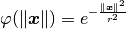

bladex.ndinterpolator.RBF.gaussian_spline¶
-
static
RBF.gaussian_spline(X, r)[source]¶ It implements the following formula:

Parameters: - X (numpy.ndarray) – l2-norm between given inputs of a function and the locations to perform rbf approximation to that function.
- r (float) – smoothing length, also called the cut-off radius.
Returns: result: the result of the formula above.
Return type: